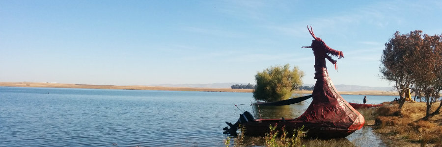

Robot Swing
by Bobi Rakova
Posted on January 29, 2016
Bibup bi bii bo. The lights are on, mate.
A giant, staring right into your soul.
Yes, no exit door, no place to hide,
no energy to scream, no gun to shoot.
Could you run away, would you even try?
... 126 years old and yet so doubtful!
You feel your mind analyzing
every possible loophole in the situation.
Bibup bi boo. Run straight at it instead.
Dance with it, swinging, singing, yay!
Laughter rushes through your vains.
Isn't this the most beautiful play of energies
you've danced through in forever?!
AI POETRY
by a LSTM RNN v0.01
Posted on January 11, 2016
The following poem is based on a recurrent neural network which has been trained on only a small amount of Shakespeare's work and is building a model that predicts the next character based on previously seen characters. Therefore it doesn’t have any idea about language and words and if the model is not elaborate enough, it will make a lot of typos too. Here’s the output which truly doesn’t make much sense:
The meaning of life is to prepare,
Intil keep our ears, madam, more most redreed funnis;
For harry thought'st me to be your parts,
Morber spot not put on, and fear gentlewivarge,
Be ready's daughter I find overfold
To enter your charges there.
The next generation of the same model took about 8 hours to finish training on all of Shakespeare’s poetry, here are some sample outputs
The purpose of life is so indeed,
sweet King chance, that I shall know thee in honour,
and keep them mine enemy; and yet our stones
And sport like men that we confess to year, if after
the herpost and his warrian preparation
even unknown to him: there's not having die off your knee?
Had your ban continently makes that execution you
content for so but the varial.
Purple fish swims in the sky of the still.
KING HENRY VIII:
God not the story of the world and death,
Who shall be stranger of the state and strong
That he was standed and such a grace of heaven,
Whose beard should be to go and part in me.
CLEOPATRA:
For so she is with the friends, the states his black word in my
hands, and of the further than it will she lie.
Thy soul is such a good lady she that were strange of a
fair and laid with the sweet contention of the
very provent of the old way to the holy confession and
are to speak to us, that I would be so much a father, and the
false winces of a mouth and merry water to the
wind of butter to the heavens of the content of
a part of a night of the day to fortune endored on
my lord and livery that is his company.
SKY DANCE
by Bobi Rakova
Posted on January 11, 2016
Look up - blue skies, how many can you count?
Is it just one or is in an infinite number of horizons,
collapsing their power into your Soul, beginningless, endless.
A magnificent river of distant galaxies, looking at you now,
burning, setting everything on Fire. Ready, set, go -
You stair back, step into the battlefield! A cosmic fight of eternal energies.
You go on, only to feel how you change each other,
Energy is never lost, just redirected - invisible waterfalls between each and every.
You go on, playing in the vivid never-ending dance of energies.
Like a Samuel Becket play produced by ancient Japanese Noh monks,
the battle can never be described, never witnessed, never repeated.
Only felt from one's hearth as one smiles to the self within and without.
The colors of infinity, the fractal nature of our Souls.
Energy junkies, technomadic wonderers, we touch each others’ lives
like the raindrops touch the blossoms of a growing winter flower.
DRAGON WINGS
by Bobi Rakova
Posted on January 11, 2016

What would you do if you could stop the World?
In the blink of a moment - everything: FROZEN!
At last it is just you! At last all is silence!
Breath and let go of you mind, can you, will you?
Error: Parse error on line 7: Impossible.
You hear you mind laughing at you
A joke, that’s you! A joke, a drunk old guy in a bar
tells his fellow in crime chugging his beer again and again.
Then again, you feel your hearth smiling at you!
You smile back and feel it rushing blood into your veins.
Cosmic network of interconnected wonders.
Yes, yes! You do have dragon wings, says your hearth.
Fly far, fly high, fly dragon, fly to freeze the World!
And when you succeed, winging your dragon wings,
Flip flop flap, how beautiful, how powerful they are.
Fractal entrance into another divinity
As loaded gunshots, the raindrops has seized their fall
in the deep tropical forrest of your Sunday morning.
Oscillating Wonders
by Bobi Rakova
Posted on January 11, 2016
We roam as fleets of musketeers
Armed with the never sleeping hunger
of building walls around -
putting things in boxes
Yet we dream of the marvelous escape
To walk away from oneself to find the true self.
In a sudden instant of infinity
we foresee - there’s no exit from the battle
We sigh and smile to our hearts
that you cannot touch the moon
while anxiously staring at the finger
of an old man pointing at it.
Pale Fire
by Vladimir Nabokov
Posted on January 11, 2016
That rare phenomenon,
the iridule - when, beautiful and strange,
In a bright sky above a mountain range
One opal cloudlet in an oval form
Reflects the rainbow of a thunderstorm
Which in a distant valley has been staged -
For we are most artistically caged.
Snowflakes Normalization
by Bobi Rakova
Posted on January 11, 2016

Snowflakes of infinite dimensions, ancient bullets of frozen H2O,
Like a never ending rays of sunshine - screaming, flying, all towards me,
There's music in my ears as I see them dancing in their random pathway.
Through highways of synapses between billions of neurons: “Weeeweweee”,
in the brain of an unexplored universe they fly, firing their soulful wishes away.
As the Sun they guide us in our inner search of the true Truth
Oh, how I love the fractal nature of our friends, the Snowflakes
So successful in their cosmic mission to always remind us of the cold.
Longing, as we see them disappear, marching, as they defy and define us.
While in an instance, we marvel at their beauty and kill them with our inner fire.
Maya
by Ralph Waldo Emerson
Posted on January 11, 2016
Illusion works impenetrable,
Weaving webs innumerable,
Her gay pictures never fail,
Crowds each on other, veil on veil,
Charmer who will be believed
By man who thirsts to be deceived.
Or changing colors of the sky,
Or ribbons of a dancing girl
That mend her beauty to the eye.
The cold gray down upon the quinces lieth
And the poor spinners weave their webs thereon
To share the sunshine that so spicy is.
Samson stark, at Dagon's knee,
Gropes for columns strong as he;
When his ringlets grew and curled,
Groped for axle of the world.
But Nature whistled with all her winds,
Did as she pleased and went her way.
If Life was a Fish Soup
by Bobi Rakova
Posted on January 11, 2016
Why would you need a wind tunnel when you have supercomputing?
That monster, which once was the top of all high tech inventions
a product of so much science, engineering, dreaming…
yet its magnificence in the distance strikes you as an Ocean of tensor dimensions.
Swim, swim little fish, swim in that Ocean of fictions.
As you alone and only you can find a way through.
Is it you, is it the flow… as if someone is giving directions?
But there’s the trap, there’s no way out - it’s a soup!
However hard you stir -
you might spill a bit, you might sip a bit only to end up back in the soup.
Why is it that it’s so hard to get out of the bowl of soup?
A leap of faith? There might be other bowls out there?
3 billion variances in the human genome
and yet just one bowl, my bowl…
If I was a fish I’d be a flying one. So that,
I can swim through the bowl of soup and then fly into the next one!
Millions, billions bowls of soup as if we’re not all made out of water,
as if we’re not all practically one(big bowl of fish soup)!